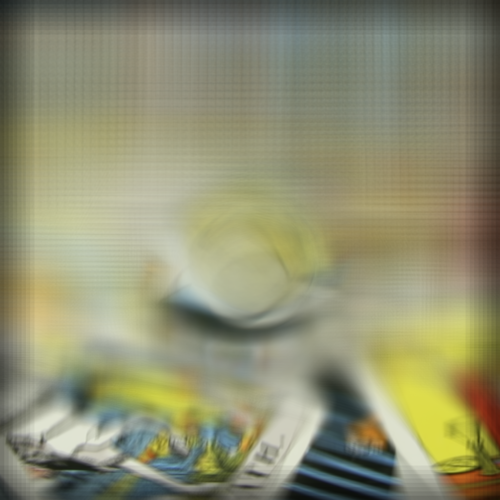
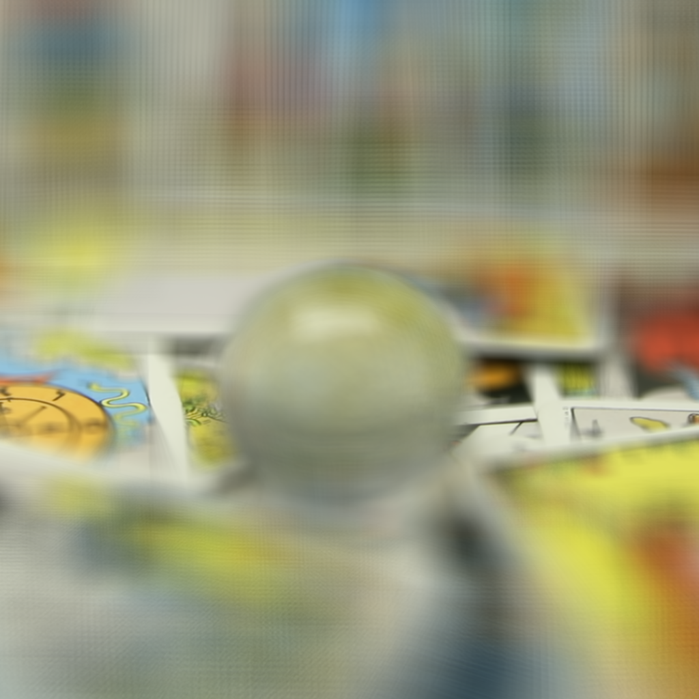
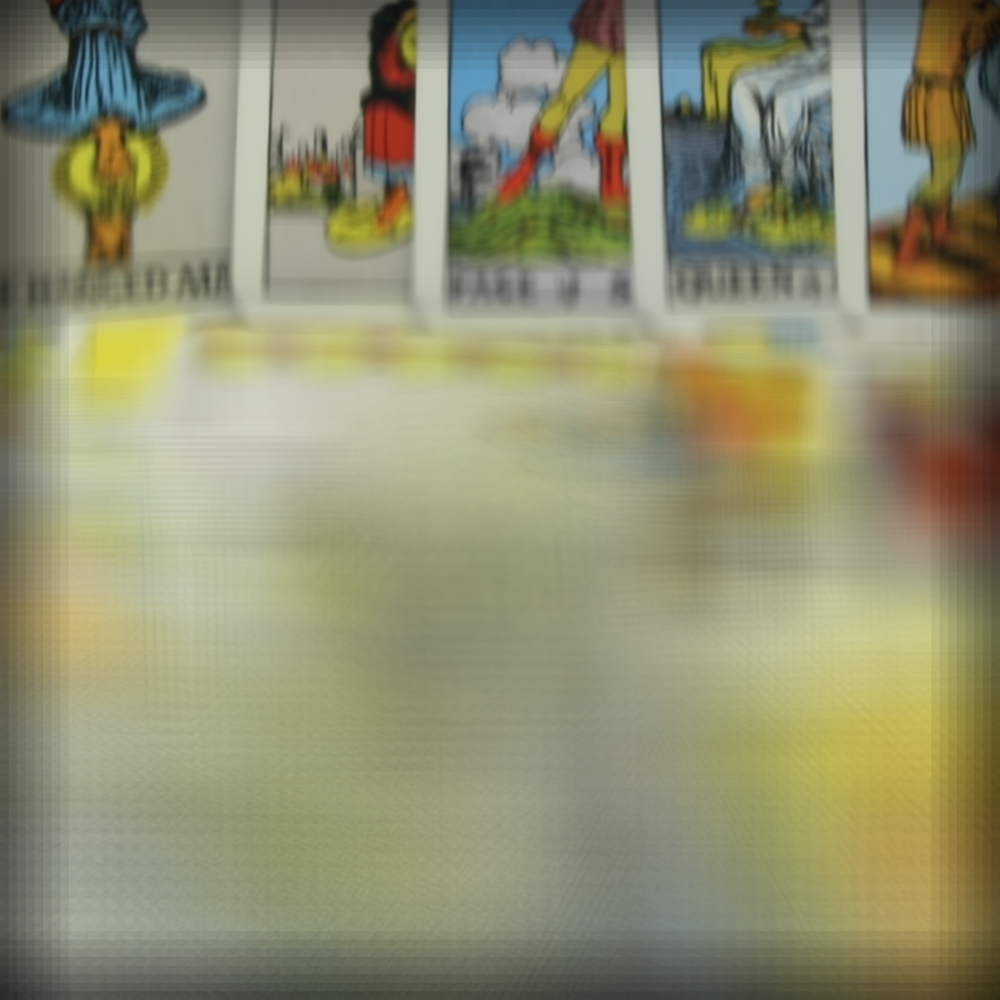
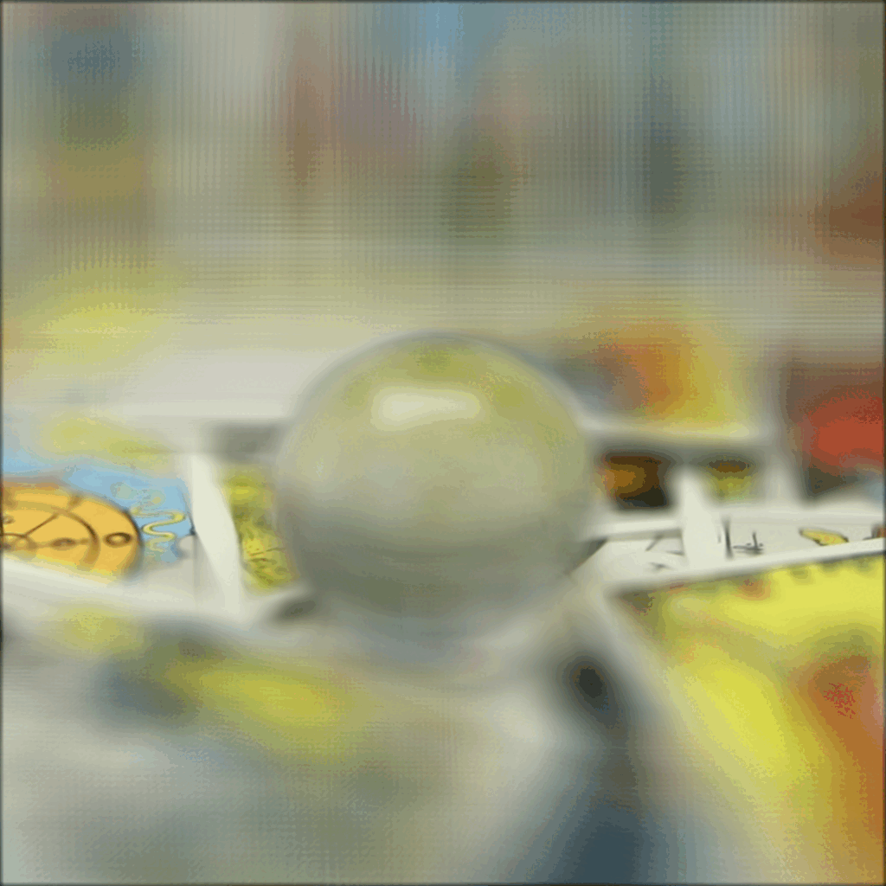
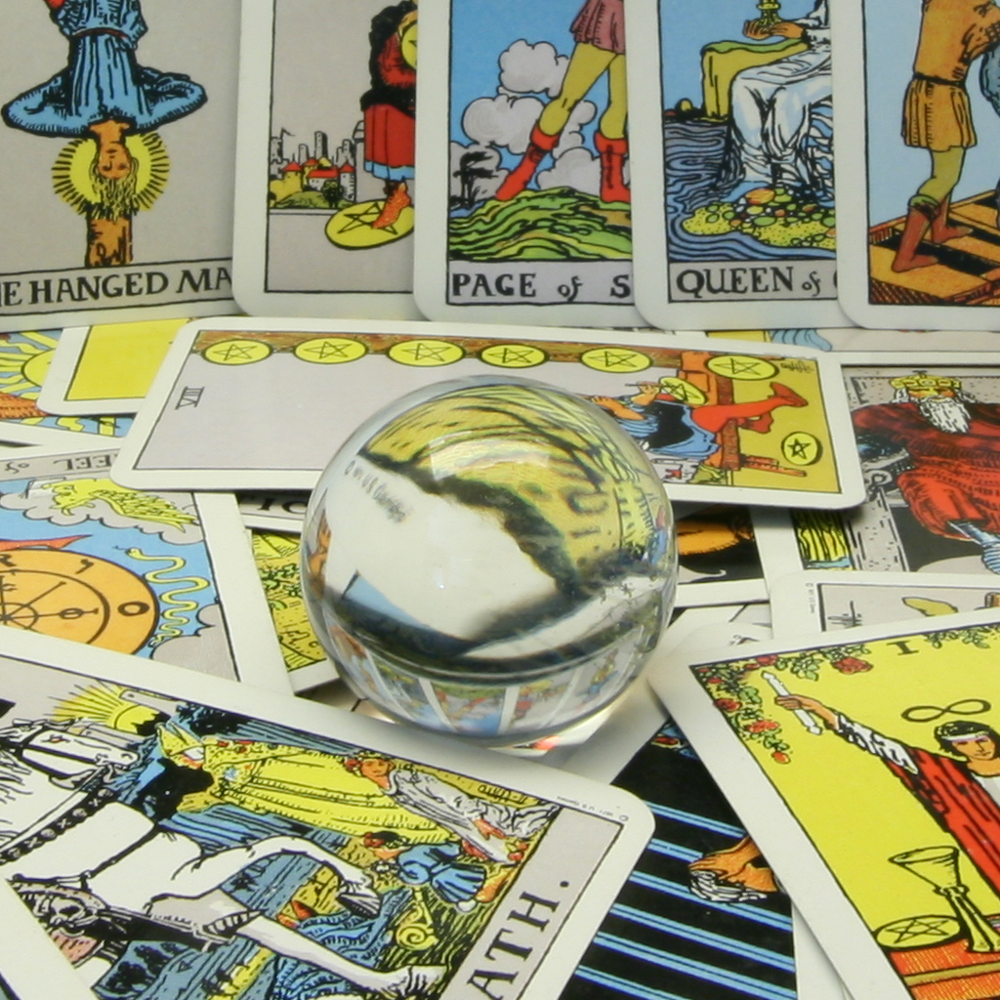
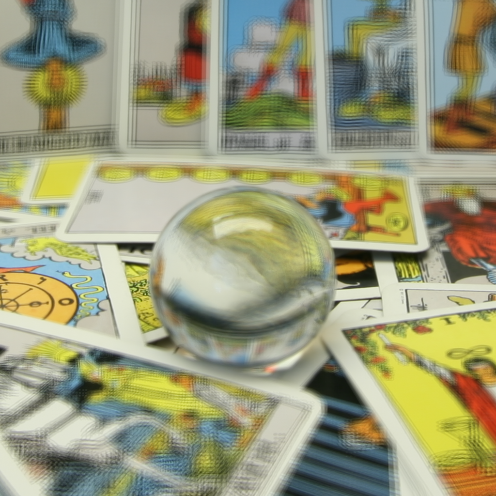
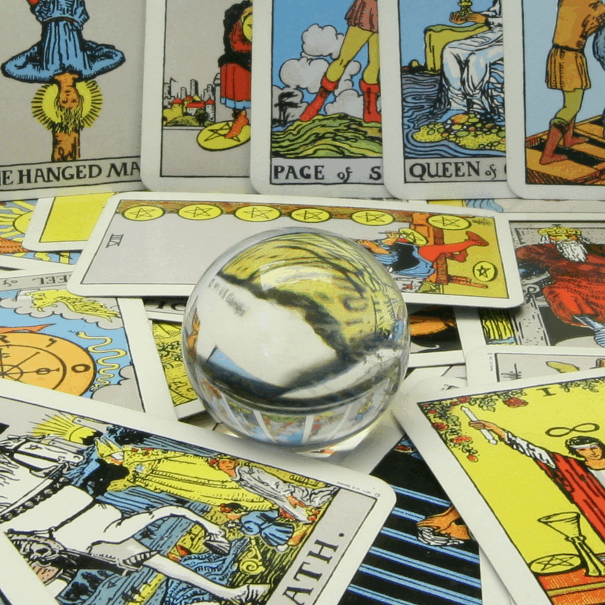
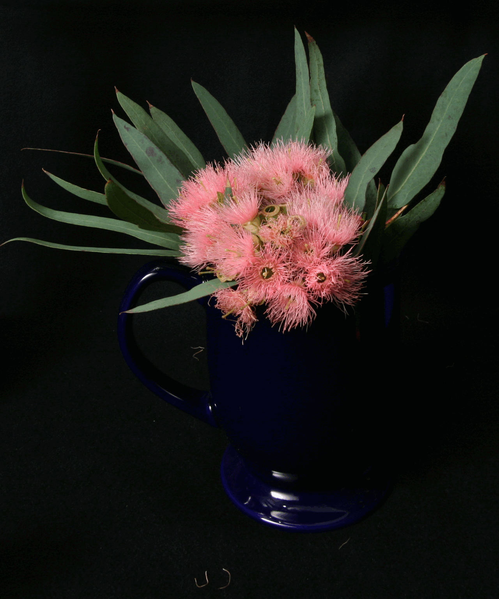

Overview
In this project, I explored the capabilities of lightfield imaging by implementing depth refocusing and aperture adjustment techniques. I utilized multiple images captured over a grid orthogonal to the optical axis to recreate complex photographic effects through simple computational operations such as shifting and averaging.
The Stanford Light Field Archive provided sample datasets consisting of multiple images taken over a regularly spaced grid.
The project is divided into two main parts:
- Depth Refocusing: Adjusting focus at different depths within the scene.
- Aperture Adjustment: Simulating varying aperture sizes to alter depth of field.
1. Depth Refocusing
Depth refocusing allows me to simulate changing the focus depth within an image after it has been captured. By selectively shifting and averaging multiple exposures, I can emphasize different objects at varying depths.
Approach
- Loading and Normalizing Images: I began by loading all LDR images from the dataset using the
load_imgs()function. This function reads the images from the specified directory, converts them to RGB format, and normalizes their pixel values to a [0, 1] range for computational efficiency. - Determining Grid Size: Using the
get_grid_size()function, I calculated the grid dimensions (rows and columns) based on the number of images. This step was crucial to accurately map each image's position within the grid. - Shifting Images Based on Depth:
- For each target focus depth specified in
FOCUS_DEPTHS, I calculated the required pixel shifts for each image in the grid. Objects closer to the camera have larger shifts, while distant objects have minimal shifts. - I applied these shifts using affine transformations with the
cv2.warpAffine()function. This alignment ensures that when images are averaged, the objects at the desired depth remain sharp.
- For each target focus depth specified in
- Averaging Shifted Images: After shifting, I averaged the pixel values of all shifted images to produce a refocused HDR image. This averaging process emphasizes the objects at the specified depth while blurring others.
- Saving and Visualizing Results: I saved each refocused image to the output directory using the
save_img()function. Additionally, I displayed sample refocused images to demonstrate the effect of changing focus depth.
Results

Refocused Image at Depth -15

Refocused Image at Depth 0

Refocused Image at Depth 15

Animated GIF Showing Refocusing at Various Depths
The depth refocused images demonstrate the ability to shift focus from foreground to background objects seamlessly, enhancing the visual clarity of the targeted depth layer. This technique effectively mimics the natural depth of field adjustment found in traditional photography.
2. Aperture Adjustment
Aperture adjustment simulates varying the size of a camera's aperture to control the depth of field. A larger aperture results in a shallower depth of field, while a smaller aperture increases the depth of field, keeping more of the scene in focus.
Approach
- Selecting Images Based on Aperture Size: I defined different aperture sizes by selecting subsets of images from the grid using the
APERTURE_SIZESlist. A larger aperture corresponds to averaging more images, while a smaller aperture uses fewer images. - Applying Aperture Adjustment: Using the
adjust_aperture()function, I averaged the selected images based on the defined aperture size. This process involves:- Calculating the radius of the aperture based on the aperture size.
- Selecting images within this radius from the center of the grid.
- Averaging these selected images to produce an aperture-adjusted image that simulates the desired depth of field.
- Saving and Visualizing Results: Each aperture-adjusted image was saved to the output directory using the
save_img()function. I also displayed sample images for different aperture sizes to illustrate the impact on depth of field.
Results

Aperture Size 1x1 (Small Aperture)

Aperture Size 3x3 (Medium Aperture)
Aperture Size 5x5 (Large Aperture)

Animated GIF Showing Aperture Adjustments from Small to Large
The aperture-adjusted images effectively demonstrate how varying aperture sizes influence the depth of field. Larger apertures highlight foreground details with a shallow depth of field, while smaller apertures ensure that both foreground and background elements remain in sharp focus.
More Examples

Animated GIF Showing Refocusing at Various Depths [-15,15]
Animated GIF Showing Aperture Adjustments from Small to Large [1x1, 9x9]
3. Summary
Working on this project was highly engaging for me, especially because of my passion for photography. I found it interesting how shifting and averaging multiple images can change the focus depth, similar to adjusting the focus ring on a camera lens after taking a shot. Watching these simple computational techniques highlight certain areas of a scene while keeping other parts nicely blurred was really fascinating. Additionally, managing numerous images gave me valuable experience in handling large datasets and optimizing processes to ensure smooth and efficient operations.
Overall, this project greatly expanded my understanding of the amazing capabilities that lightfield technology offers in modern photography. It's impressive how these techniques can improve things like creative image manipulation, allowing people like me who take phpotos to to create more dynamic and visually appealing ones.